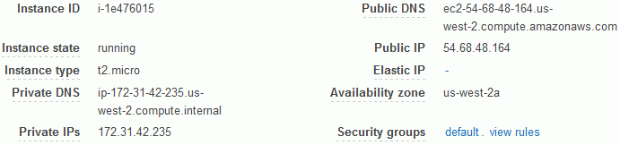
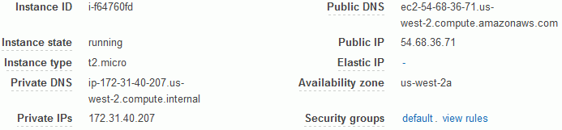
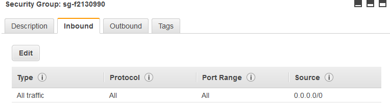
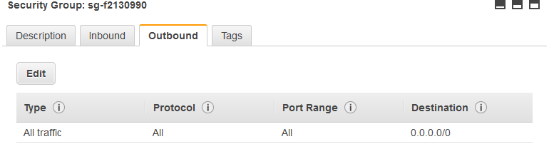
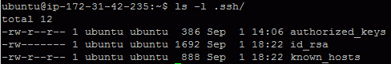
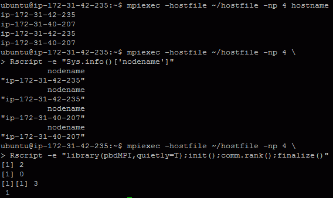

This is a summary to steup a cluster on AWS EC2. In short, the key points are
54.68.48.164
and
54.68.36.71, while
they also have private DNSs
ip-172-31-42-235
and
ip-172-31-40-207, respectively.
All instances are in a default security group.
The next figures show what they should be.


default security groups
(under NETWORK & SECURITY on the left hand side menu) where
I set both Inbund and Outbund rules to
MPI can access among instances and via
whatever ports are needed.
The next figures show what they should be.


ssh and login with each other
without typing further user name and password.
Note that MPI is in a batch mode which does not allowing
any interruption.
The next figure shows what it should be.

known_hosts can be generated via
|
/etc/ssh/ssh_config to avoid checking and this
step.
OpenMPI, R, and
pbdMPI and their dependences as next.
SHELL> sudo apt-get update
SHELL> sudo apt-get install libopenmpi-dev openmpi-bin
SHELL> sudo apt-get install r-base
SHELL> sudo R CMD INSTALL rlecuyer_0.3-3.tar.gz
SHELL> sudo R CMD INSTALL pbdMPI_0.2-5.tar.gz
-
Login
instance, say
ip-172-31-42-235
should have the following lines in the file
~/hostfile to let MPI knows which
machines are available to launch applications either in SPMD.
ip-172-31-42-235
ip-172-31-40-207
Add more instances if you have more and
see OpenMPI website for more examples of this file.
-
In the
login
instance, you may
test
hostname, R, and pbdMPI
in 4 processors as next.
SHELL> mpiexec -hostfile ~/hostfile -np 4 hostname
SHELL> mpiexec -hostfile ~/hostfile -np 4 \
Rscript -e "Sys.info()['nodename']"
SHELL> mpiexec -hostfile ~/hostfile -np 4 \
Rscript -e "library(pbdMPI,quietly=T);init();comm.rank();finalize()"
The outputs should be as next if all setups are correct.
